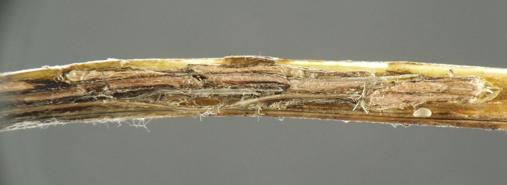
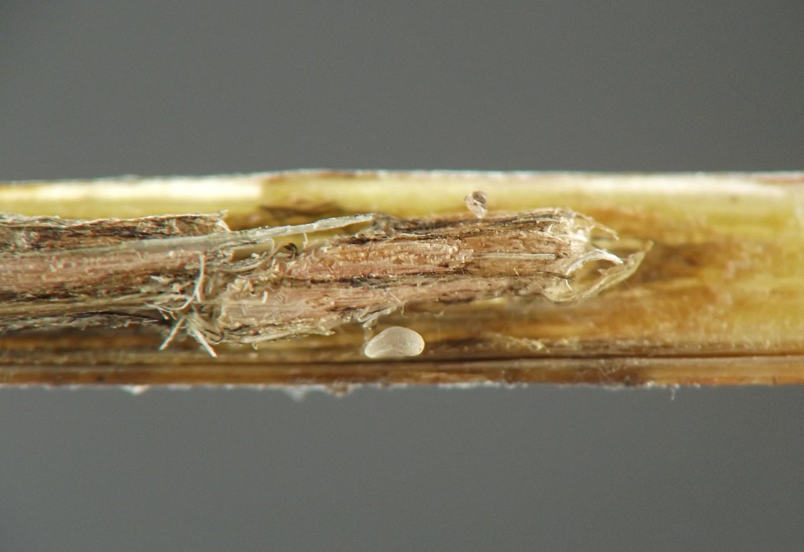
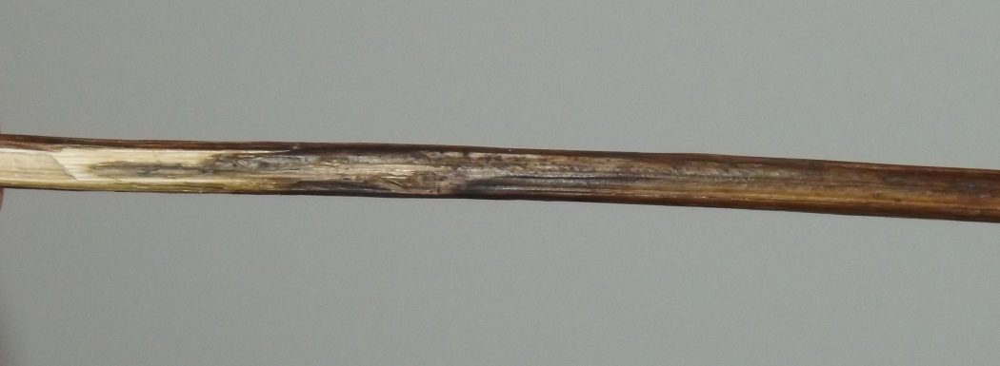
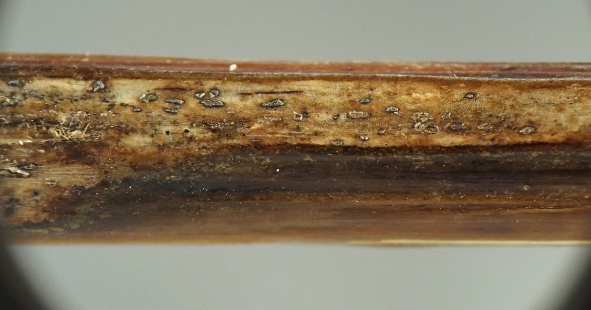
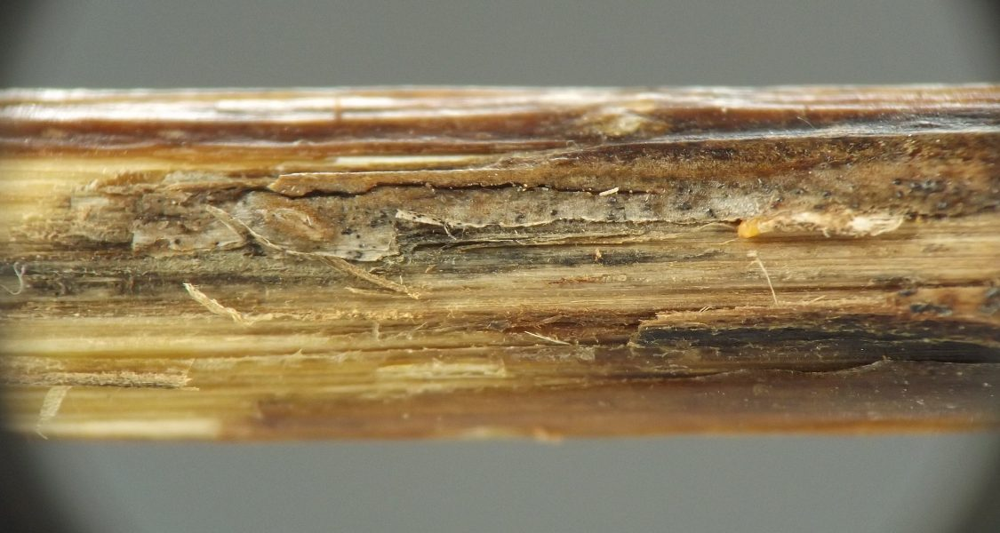
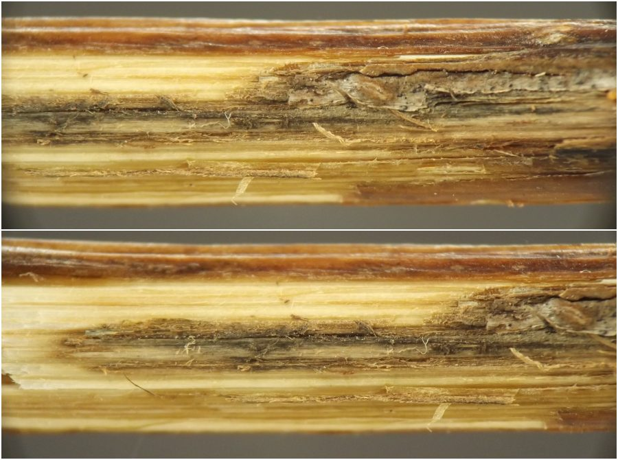
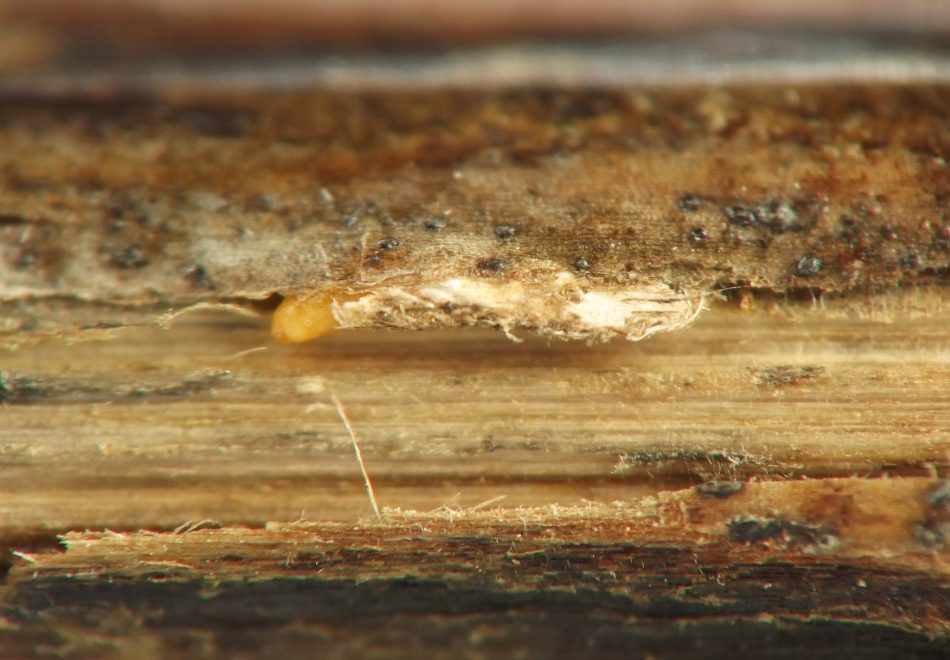
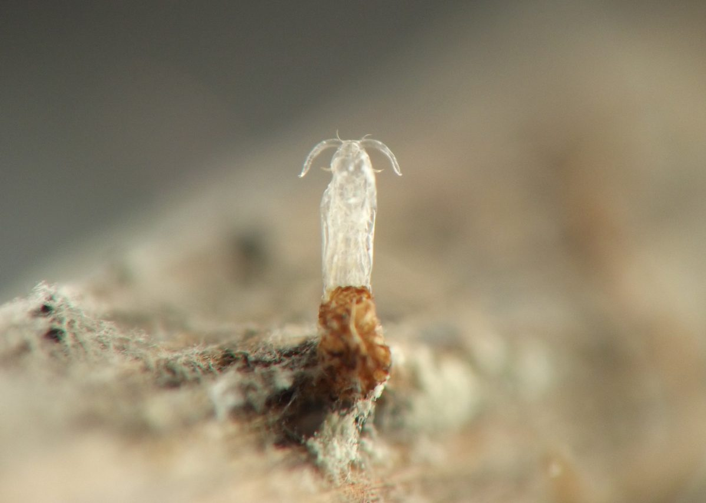
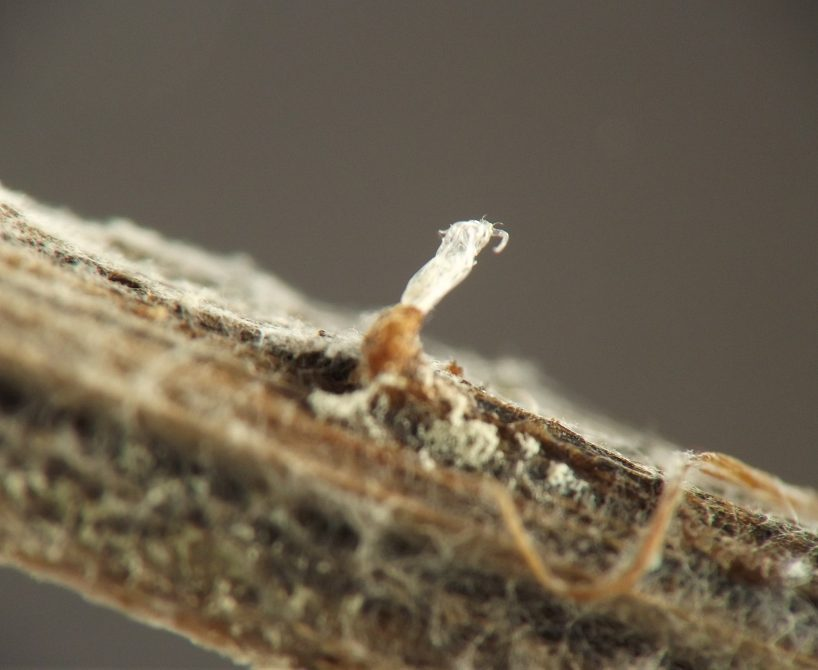

Local feeder (Diptera: Cecidomyiidae) in petioles and stems of Zizia
| Record no.: | 0617 |
|---|---|
| Feeding guild: | Local feeder(s) in petiole and stem |
| Taxonomy: | Diptera: Cecidomyiidae: cf. Lasiopteridi |
| Stages observed: | trace, larva, pupa, adult |
| Distribution observed: | IA |
| Hosts in Zizia: | Z. aurea (golden alexanders) |
I located larvae overwintering in a petiole and a main stem of the host. In the petiole, found in late October 2021, several larvae were lined up end-to-end inside whitish cocoons. In the main stem, found in winter 2022-2023, a discolored, sunken area on the lower stem housed multiple larvae in cocoons just under the outermost layers of stem tissue. Parts of the epidermis in the sunken area were whitish or light gray with black spots, while other parts were blackened; this is similar to damage I have observed from Neolasioptera species in other hosts.
I reared one or more adults from both the petiole and the stem. Upon its emergence as an adult, one of the stem-dwelling individuals left its pupal exuviae protruding from the stem.
The reared adults were quite diminutive. They had a black and white scale pattern reminiscent of Neolasioptera, but were not conclusively identified beyond family level. Lasioptera ziziae has been previously recorded from stem swellings of Zizia in Illinois (Gagné 1989).

 Prev
Prev
{kind=link}
{kind=link}

{kind=link}

{kind=link}

{kind=link}

{kind=link}

{kind=link}

{kind=link}

{kind=link}

- Gagné, R.J. 1989. The plant-feeding gall midges of North America. Cornell University Press: Ithaca, New York.[return to in-text citation]
Page created: April 3, 2026. Last update: April 3, 2026